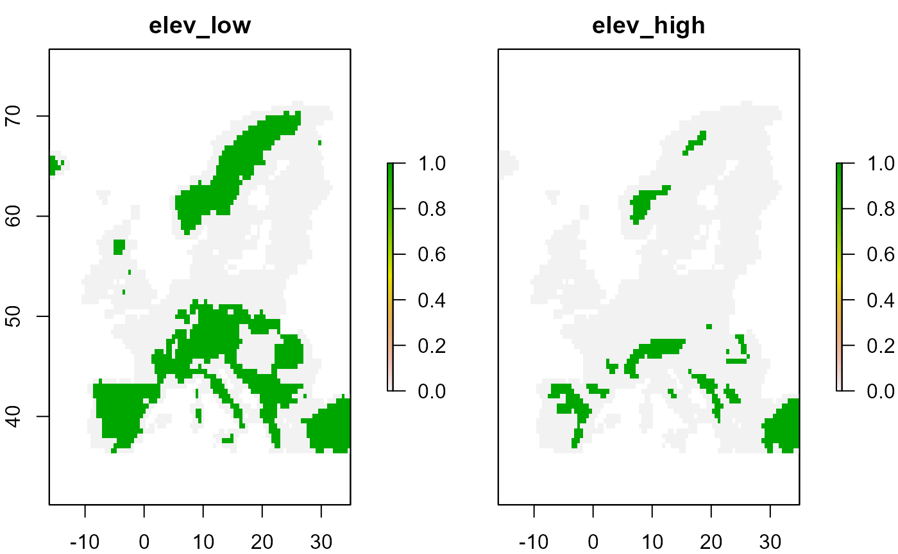
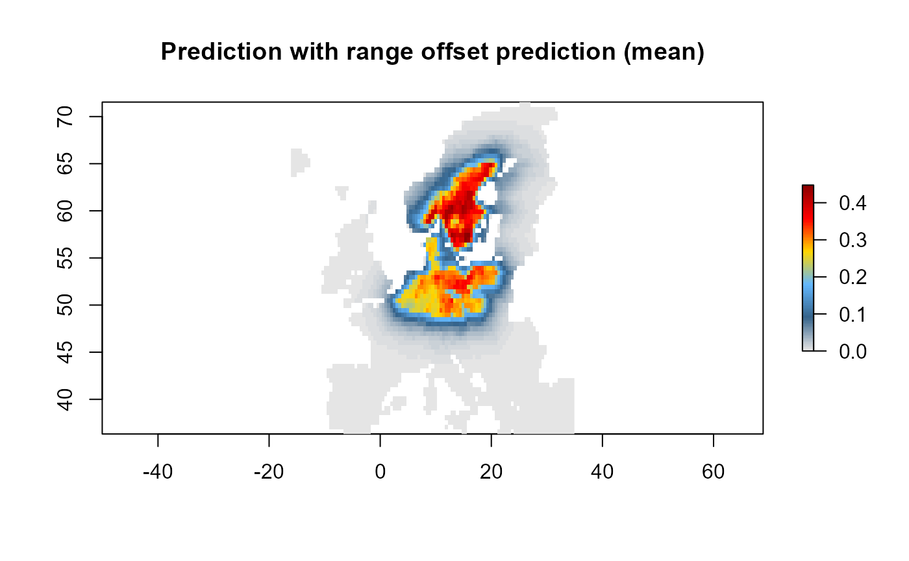
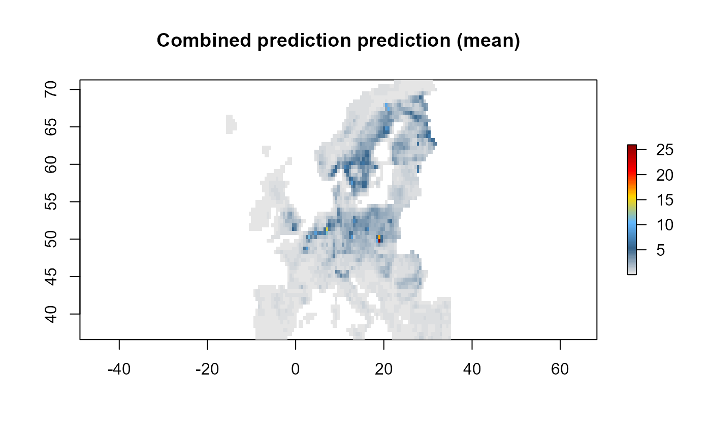

Data integration
Martin Jung
2022-08-06
Source:vignettes/02_integrate_data.Rmd
02_integrate_data.RmdOne of the key ambitions of the ibis.iSDM R-package is
to provide a comprehensive framework for model-based integration of
different biodiversity datasets and parameters. As ‘integration’ in the
context of SDMs we generally refer to as any approach where additional
observational data or parameters find their way into model estimation.
The purpose behind the integration can be:
- to correct for certain biases (spatial, environmental) in the primary dataset, taking advantage of different types of biodiversity sampling schemes.
- nudge data-driven algorithms towards estimates that are informed by domain knowledge (through offsets or priors) rather than letting the algorithm making naive uniformly distributed guesses.
- to provide a more wholesome estimate of the distribution of a species distribution by relying on multiple sources of evidence. Particular when there are multiple surveys that complement each other.
There are thus multiple types of integration and we recommend to have a look at Fletcher et al. (2019) and Isaac et al. (2020) for an overview.
The Package comparison page and the examples below provide some insight into what is currently possible with regards to data integration in the ibis.iSDM R-package. Additional methods, priors and engines are planned. Of course it is equally possible to ‘integrate’ not only observational data and parameters, but link entire models with ibis.iSDM outputs. More on this in the scenario help page.
Load relevant packages and testing data
# Load the package
library(ibis.iSDM)
library(inlabru)
library(xgboost)
library(raster)
#> Warning: package 'raster' was built under R version 4.2.1
library(igraph)
library(assertthat)Lets load some of the prepared test data for this exercise. This time we are going to make use of several datasets.
# Background layer
background <- raster::raster(system.file("extdata/europegrid_50km.tif",package = "ibis.iSDM", mustWork = TRUE))
# Load virtual species points
virtual_species <- sf::st_read(system.file("extdata/input_data.gpkg",package = "ibis.iSDM", mustWork = TRUE), "points", quiet = TRUE)
virtual_range <- sf::st_read(system.file('extdata/input_data.gpkg', package='ibis.iSDM'), 'range', quiet = TRUE)
# In addition we will use the species data to generate a presence-absence dataset with pseudo-absence points.
# Here we first specify the settings to use:
ass <- pseudoabs_settings(background = background, nrpoints = 200,
method = "random")
virtual_pseudoabs <- add_pseudoabsence(df = virtual_species, field_occurrence = "Observed",
settings = ass)
# Predictors
predictors <- raster::stack(list.files(system.file("extdata/predictors/", package = "ibis.iSDM", mustWork = TRUE), "*.tif",full.names = TRUE))
# Make use only of a few of them
predictors <- subset(predictors, c("bio01_mean_50km","bio03_mean_50km","bio19_mean_50km",
"CLC3_112_mean_50km","CLC3_132_mean_50km",
"CLC3_211_mean_50km","CLC3_312_mean_50km",
"elevation_mean_50km"))We can define a generic model to use for any of the sections below.
# First define a generic model and engine using the available predictors
basemodel <- distribution(background) %>%
add_predictors(env = predictors, transform = "scale", derivates = "none") %>%
engine_inlabru()
#> Loading required namespace: rgeos
#> [Setup] 2022-08-06 11:31:33 | Creating distribution object...
#> [Setup] 2022-08-06 11:31:33 | Adding predictors...
#> [Setup] 2022-08-06 11:31:33 | Transforming predictors...Integration through predictors
The most simple way of integrating prior observations into species
distribution models is to add them as covariate. This is based on the
assumption that for instance an expert-drawn range map can be useful in
predicting where species exist might or might not find suitable habitat
(see for instance Domisch et al. 2016).
A benefit of this approach is that predictors can be easily added to all
kinds of engines in the ibis.ISDM package and also used for
scenarios.
# Here we simply add the range as simple binary predictor
mod1 <- basemodel %>%
add_predictor_range(virtual_range, method = "distance")
#> [Setup] 2022-08-06 11:31:37 | Adding range predictors...
# We can see that the range has been added to the predictors object
# 'distance_range'
mod1$get_predictor_names()
#> [1] "bio01_mean_50km" "bio03_mean_50km" "bio19_mean_50km"
#> [4] "CLC3_112_mean_50km" "CLC3_132_mean_50km" "CLC3_211_mean_50km"
#> [7] "CLC3_312_mean_50km" "elevation_mean_50km" "distance_range"Expert-ranges can currently be added as simple binary or
distance transform. For the latter more options are
available in the bossMaps R-package as described in Merow et al. 2017.
Another option that has been added is the possibility to add thresholded masks based on some elevational (or other) limits. The idea here is to generate two layers, one with areas between a lower and an upper range and one above the upper range. Regression against such thresholded layers can thus approximate the lower and upper bounds. For instance suppose a species is known to occur between 300 and 800m above sea level, this can be added as follows:
# Specification
basemodel <- distribution(background) %>%
add_predictors(env = predictors, transform = "scale", derivates = "none") %>%
engine_inlabru()
#> [Setup] 2022-08-06 11:31:42 | Creating distribution object...
#> [Setup] 2022-08-06 11:31:42 | Adding predictors...
#> [Setup] 2022-08-06 11:31:42 | Transforming predictors...
mod1 <- basemodel %>%
add_predictor_elevationpref(layer = predictors$elevation_mean_50km,
lower = 300, upper = 800)
#> [Setup] 2022-08-06 11:31:46 | Formatting elevational preference predictors...
# Plot the threshold for an upper
plot( mod1$predictors$get_data()[[c("elev_low", "elev_high")]] )
Integration through offsets
Apart from including spatial-explicit prior biodiversity knowledge as predictors in a SDM model, there is - particular for Poisson Process Models (PPM) - also a different approach, that is to include the variable as offset in the prediction. Doing so affects the tells the respective engine to change intercepts and coefficients based on an already provided coefficient. Offsets can be specified as addition or as nuisance to existing model, for instance either by adding an expert-delienated range as offset or by factoring out the spatial bias of their occurrence. Multiple offsets can be specified for any given PPM by simply multiplying them. A comprehensive overview can be found in Merow et al. (2016).
# Specification
mod1 <- distribution(background) %>%
add_predictors(env = predictors, transform = "scale", derivates = "none") %>%
add_biodiversity_poipo(virtual_species,field_occurrence = "Observed") %>%
add_offset_range(virtual_range) %>%
engine_xgboost() %>%
# Train
train(runname = "Prediction with range offset",only_linear = TRUE)
#> [Setup] 2022-08-06 11:31:53 | Creating distribution object...
#> [Setup] 2022-08-06 11:31:53 | Adding predictors...
#> [Setup] 2022-08-06 11:31:53 | Transforming predictors...
#> [Setup] 2022-08-06 11:31:56 | Adding poipo dataset...
#> [Setup] 2022-08-06 11:31:57 | Adding range offset...
#> [Estimation] 2022-08-06 11:31:58 | Collecting input parameters.
#> [Estimation] 2022-08-06 11:31:58 | Adding engine-specific parameters.
#> [Estimation] 2022-08-06 11:31:58 | Engine setup.
#> [Estimation] 2022-08-06 11:31:59 | Starting fitting: Species:
#> [Estimation] 2022-08-06 11:32:42 | Starting prediction...
#> [Done] 2022-08-06 11:32:42 | Completed after 44.23 secs
plot(mod1)
There are other ways to add offsets to the model object, either
directly (add_offset()) as an externally calculated
RasterLayer for instance with the “BossMaps” R-package, to calculate as
range (add_offset_range()) or elevation
(add_offset_elevation()) offset, or also as biased offset
(add_offset_bias()) in which case the offset is removed
from the prediction.
Integration with priors
A different type of integration is also possible through the use of
priors which are usually set either on fixed or random effects. In a
Bayesian sense a prior is generally understood as some form of uncertain
quantity that is meant to reflect the direction and/or magnitude of
model parameters and is usually known a-priori to any inference or
prediction. Since the ibis.iSDM package supports a variety of engines
and not all of them are Bayesian in a strict sense (such as
engine_gdb or engine_xgboost), the
specification of priors differs depending on the engine in question.
Generally [Prior-class] objects can be grouped into:
Probabilistic priors with estimates placed on for example the mean (\(\mu\)) and standard deviation (\(\sigma\)) or precision in the case of [
engine_inla].Monotonic constraints on the direction of a coefficient in the model. Useful to incorporate for instance prior ecological knowledge on that a certain response function has to be positive.
More complex priors specified on random spatial effects such as penalized complexity priors used for SPDE effects in [
add_latent_spatial()].Probabilistic priors on the inclusion probability of a certain variable such as to what certainty the variable should or should not be included in a regularized outcome.
Prior specifications are specific to each engine and more information
can be found on the individual help pages of the priors()
function.
# Set a clean base model with biodiversity data
x <- distribution(background) %>%
add_predictors(env = predictors, transform = "scale", derivates = "none") %>%
add_biodiversity_poipo(virtual_species,field_occurrence = "Observed") %>%
engine_inlabru()
#> [Setup] 2022-08-06 11:32:46 | Creating distribution object...
#> [Setup] 2022-08-06 11:32:46 | Adding predictors...
#> [Setup] 2022-08-06 11:32:46 | Transforming predictors...
#> [Setup] 2022-08-06 11:32:49 | Adding poipo dataset...
# Make a first model
mod1 <- train(x, only_linear = TRUE)
#> [Estimation] 2022-08-06 11:32:50 | Collecting input parameters.
#> [Estimation] 2022-08-06 11:32:50 | Adding engine-specific parameters.
#> [Estimation] 2022-08-06 11:33:40 | Engine setup.
#> [Estimation] 2022-08-06 11:33:40 | Starting fitting.
#> [Estimation] 2022-08-06 11:33:53 | Starting prediction.
#> [Done] 2022-08-06 11:34:39 | Completed after 1.82 mins
# Now assume we now that the species occurs more likely in intensively farmed land.
# We can use this information to construct a prior for the linear coefficient.
p <- INLAPrior(variable = "CLC3_211_mean_50km",
type = "normal",
hyper = c(2, 1000) # Precision priors, thus larger sigmas indicate higher precision
)
# Single/Multiple priors need to be passed to `priors` and then added to the model object.
pp <- priors(p)
# The variables and values in this object can be queried as well
pp$varnames()
#> 2bdd86e7-bc80-4f6a-8aa8-6d89cf1a6b63
#> "CLC3_211_mean_50km"
# Priors can then be added via
mod2 <- train(x %>% add_priors(pp), only_linear = TRUE)
#> [Estimation] 2022-08-06 11:34:39 | Collecting input parameters.
#> [Estimation] 2022-08-06 11:34:39 | Adding engine-specific parameters.
#> [Estimation] 2022-08-06 11:34:40 | Engine setup.
#> [Estimation] 2022-08-06 11:34:41 | Starting fitting.
#> [Estimation] 2022-08-06 11:34:53 | Starting prediction.
#> [Done] 2022-08-06 11:35:30 | Completed after 51.1 secs
# Or alternatively directly as parameter via add_predictors,
# e.g. add_predictors(env = predictors, priors = pp)
# Compare the difference in effects
p1 <- partial(mod1, pp$varnames(), plot = TRUE)
p2 <- partial(mod2, pp$varnames(), plot = TRUE)
There is also now a convenience function that allows to extractt
coefficients or weights from an existing model when can then be passed
to another model or engine (get_priors()). Required is only
that a fitted model is provided as well as a target engine for which
coefficients are to be created.
Integration with ensembles
Another very straight forward way for model-based integration is to simply fit two separate models each with a different biodiversity dataset and then create an ensemble from them. This approach also works across different engines and a variety of data types (in some cases requiring normalization given the difference in units).
# Create and fit two models
mod1 <- distribution(background) %>%
add_predictors(env = predictors, transform = "scale", derivates = "none") %>%
engine_xgboost(nrounds = 5000) %>%
# Add dataset 1
add_biodiversity_poipo(poipo = virtual_species, name = "Dataset1",field_occurrence = "Observed") %>%
train(runname = "Test1", only_linear = TRUE)
#> [Setup] 2022-08-06 11:35:43 | Creating distribution object...
#> [Setup] 2022-08-06 11:35:43 | Adding predictors...
#> [Setup] 2022-08-06 11:35:43 | Transforming predictors...
#> [Setup] 2022-08-06 11:35:48 | Adding poipo dataset...
#> [Estimation] 2022-08-06 11:35:48 | Collecting input parameters.
#> [Estimation] 2022-08-06 11:35:48 | Adding engine-specific parameters.
#> [Estimation] 2022-08-06 11:35:48 | Engine setup.
#> [Estimation] 2022-08-06 11:35:48 | Starting fitting: Dataset1
#> [Estimation] 2022-08-06 11:36:08 | Starting prediction...
#> [Done] 2022-08-06 11:36:08 | Completed after 19.99 secs
mod2 <- distribution(background) %>%
add_predictors(env = predictors, transform = "scale", derivates = "none") %>%
engine_xgboost(nrounds = 5000) %>%
# Add dataset 2, Here we simple simulate presence-only points from a range
add_biodiversity_polpo(virtual_range, name = "Dataset2",field_occurrence = "Observed",
simulate = TRUE,simulate_points = 300) %>%
train(runname = "Test1", only_linear = TRUE)
#> [Setup] 2022-08-06 11:36:12 | Creating distribution object...
#> [Setup] 2022-08-06 11:36:12 | Adding predictors...
#> [Setup] 2022-08-06 11:36:12 | Transforming predictors...
#> [Setup] 2022-08-06 11:36:16 | Adding polpo dataset...
#> Warning: package 'sf' was built under R version 4.2.1
#> [Setup] 2022-08-06 11:36:17 | Adding poipo dataset...
#> [Estimation] 2022-08-06 11:36:17 | Collecting input parameters.
#> [Estimation] 2022-08-06 11:36:17 | Adding engine-specific parameters.
#> [Estimation] 2022-08-06 11:36:17 | Engine setup.
#> [Estimation] 2022-08-06 11:36:17 | Starting fitting: Dataset2_simulated
#> [Estimation] 2022-08-06 11:36:39 | Starting prediction...
#> [Done] 2022-08-06 11:36:39 | Completed after 21.71 secs
# Show outputs of each model individually and combined
plot(mod1)
plot(mod2)
# Now create an ensemble:
# Although not strictly necessary here sinc everything else is equal, we are going to normalize
# both layers for the ensemble
e <- ensemble(mod1, mod2, method = "mean", normalize = TRUE)
# The ensemble contains the mean and the coefficient of variation across all objects
plot(e)
Combined and joint likelihood estimation
In the examples above we always added only a single biodiversity data source to a model to be trained, but what if we add multiple different ones? As outlined by Isaac et al. 2020 joint, model-based integration of different datasources allows to borrow strengths of different datasets (quantity, quality) and can help in supposedly more accurate parameter estimations and help to control for biases.
Depending on the engine, the ibis.iSDM package currently supports either combined or joint estimation of several datasets.
Combined integration
By default all engines that do not support any joint estimation (see below) will make use of a combined integration, for which there are currently three different options:
“predictor”: The predicted output of the first (or previously fitted) models are added to the predictor stack and thus are predictors for subsequent models (Default).
“offset”: The predicted output of the first (or previously fitted) models are added as spatial offsets to subsequent models. Offsets are back-transformed depending on the model family.
“prior”: In this option we only make use of the coefficients from a previous model to define priors to be used in the next model. Might not work with any engine!
“interaction”: In the case of two datasets of the same type it also is possible to make use of factor interactions. In this case the prediction is made based on the first reference level (e.g. the first added dataset). This subsequently only works if one fits a model with multiple datasets on the same response (e.g. Bernoulli distributed).
All of these can be specified as parameter in
train().
Note that for “predictor” and “offset” models are trained in the sequence to which datasets have been added!
# Specification
mod1 <- distribution(background) %>%
add_predictors(env = predictors, transform = "scale", derivates = "none") %>%
# A presence only dataset
add_biodiversity_poipo(virtual_species,field_occurrence = "Observed") %>%
# A Presence absence dataset
add_biodiversity_poipa(virtual_pseudoabs,field_occurrence = "Observed") %>%
engine_xgboost() %>%
# Train
train(runname = "Combined prediction",only_linear = TRUE,
method_integration = "predictor")
#> [Setup] 2022-08-06 11:36:46 | Creating distribution object...
#> [Setup] 2022-08-06 11:36:46 | Adding predictors...
#> [Setup] 2022-08-06 11:36:46 | Transforming predictors...
#> [Setup] 2022-08-06 11:36:50 | Adding poipo dataset...
#> [Setup] 2022-08-06 11:36:50 | Adding poipa dataset...
#> [Estimation] 2022-08-06 11:36:50 | Collecting input parameters.
#> [Estimation] 2022-08-06 11:36:51 | Adding engine-specific parameters.
#> [Estimation] 2022-08-06 11:36:51 | Engine setup.
#> [Estimation] 2022-08-06 11:36:51 | Starting fitting: Species:
#> [Estimation] 2022-08-06 11:37:33 | Starting prediction...
#> [Estimation] 2022-08-06 11:37:33 | Engine setup.
#> [Estimation] 2022-08-06 11:37:33 | Starting fitting: Species:
#> [Estimation] 2022-08-06 11:37:55 | Starting prediction...
#> [Done] 2022-08-06 11:37:55 | Completed after 1.08 mins
# The resulting object contains only the final prediction, e.g. that of the presence-absence model
plot(mod1)
Joint likelihood estimation
Some engines, notably [engine_inla],
[engine_inlabru] and [engine_stan] support the
joint estimation of multiple likelihoods. The algorithmic approach in
this package generally follows an approach outlined where any
presence-only datasets are modelled through a log-Gaussian Cox process
where the expected number of individuals are estimated as a function of
area following a Poisson distribution.
\[\begin{align*} N(A) &\sim {\sf Poisson}\left(\int_{A} \lambda(i)\right) \\ \end{align*}\] \[\begin{align*} \log(\lambda(s)) = \alpha_{1} + \sum_{k}^{K} \beta_{k}x_{ki} \end{align*}\]
where \(N\) is the number of individuals and \(A\) the Area for a given spatial unit \(i\), with \(N(A)\) being an estimate of the relative rate of occurrence per unit area (or ROR). \(k\) is an increment for \(K\) number of predictors. \(\lambda\) is the intensity function, \(\alpha\) the intercept and \(\beta\) the parameter coefficients for environmental covariates.
Presence-absence data are estimated as draws from a Bernoulli distribution:
\[\begin{align*} Y_{i} &\sim {\sf Bernoulli(p_{i})}, i = 1, 2, ... \\ \end{align*}\] \[\begin{align*} \log(-\log(1-p_{i})) &= \alpha_{2} + \sum_{k}^{K} \beta_{k}x_{ki} \end{align*}\]
where \(Y\) is the presence-absence of an record as sampled from a Bernoulli distribution in a given spatial unit \(i\). \(\alpha\) being the intercept and \(\beta\) the parameter coefficients for environmental covariates.
The Joint likelihood is then estimated by multiplying the two likelihoods from above \(\prod_{l}^{L} f(l)\), where \(L\) is an individual likelihood, with \(\beta_{k}\) being shared parameters between the two likelihoods. Equally it is also possible to add latent spatial effects such as Gaussian fields (approximated through a stochastic partial differential equation (SPDE)) to the model, alowing to share the spatial covariance - or bias - among datasets.
See the Engine comparison for an overview on which engines support this level of integration.
# Define a model
mod1 <- distribution(background) %>%
add_predictors(env = predictors, transform = "scale", derivates = "none") %>%
# A presence only dataset
add_biodiversity_poipo(virtual_species,field_occurrence = "Observed") %>%
# A Presence absence dataset
add_biodiversity_poipa(virtual_pseudoabs,field_occurrence = "Observed") %>%
# Use inlabru for estimation and default parameters.
# INLA requires the specification of a mesh which in this example is generated from the data.
engine_inlabru() %>%
# Train
train(runname = "Combined prediction", only_linear = TRUE,
method_integration = "predictor")
# The resulting object contains the combined prediction with shared coefficients among datasets.
plot(mod1)
# Note how an overall intercept as well as separate intercepts for each dataset are added.
summary(mod1)
#> # A tibble: 11 × 8
#> variable mean sd `0.025quant` `0.5quant` `0.975quant` mode kld
#> <chr> <dbl> <dbl> <dbl> <dbl> <dbl> <dbl> <dbl>
#> 1 Intercept -0.296 25.5 -50.4 -0.295 49.8 NA 2.73e-8
#> 2 Intercept… -0.292 25.6 -50.5 -0.292 49.9 NA 2.66e-8
#> 3 Intercept… -0.304 25.6 -50.6 -0.304 49.9 NA 2.84e-8
#> 4 bio01_mea… -0.0111 0.137 -0.281 -0.0106 0.258 NA 1.11e-8
#> 5 bio03_mea… -0.591 0.128 -0.845 -0.590 -0.341 NA 1.93e-4
#> 6 bio19_mea… 0.450 0.0865 0.274 0.452 0.614 NA 5.53e-7
#> 7 CLC3_112_… 0.428 0.0534 0.322 0.429 0.531 NA 2.78e-3
#> 8 CLC3_132_… 0.0887 0.0488 -0.0148 0.0914 0.176 NA 1.16e-8
#> 9 CLC3_211_… 0.791 0.0806 0.633 0.790 0.950 NA 5.43e-4
#> 10 CLC3_312_… 0.932 0.0660 0.803 0.931 1.06 NA 1.25e-3
#> 11 elevation… 0.0102 0.0874 -0.165 0.0115 0.178 NA 1.79e-5